Партнерская программа предназначена для популяризации магазина среди покупателей, а также увеличения индекса цитирования сайта для поисковых систем путем материального стимулирования размещения ссылок на магазин на сайтах партнеров. Устанавливая на своем ресурсе ссылку на магазин, владелец сайта при определенных условиях, описываемых в партнерском соглашении, может рассчитывать на получение вознаграждения как процента от суммы покупки, сделанной «приведенным» им покупателем, и/или фиксированной суммы за каждого посетителя.
В свою очередь владелец магазина, желающий задействовать партнерскую программу, должен создать раздел типа "Ссылка на страницу" (см. "Свойства разделов", указав в качестве "Раздел ссылается на" - "Стандартную страницу" и выбрать из списка предложенных- "Партнерскую программу".
Тогда владелец ресурса, желающий стать партнером, кликнув на эту ссылку попадет на страницу идентификации партнера:
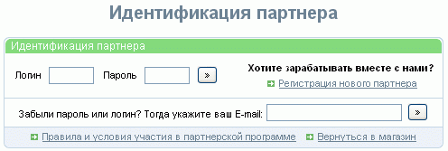
где может выбрать ссылку "Регистрация нового партнера".
Идентифицированный партнер может: просмотреть общие данные, журнал расчетов, статистику, ракламный материал, а также изменить данные о себе, указанные при регистрации.
Однако предварительно владельцу магазина необходимо задать ряд настроек. Окно партнерской программы вызывается из главного меню программы "Дополнительно - Партнерская программа" и состоит из ряда закладок:
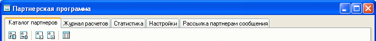
Рассмотрим подробнее эти закладки.
Закладка "Настройки" в свою очередь содержит четыре закладки:
1. "Основные". Здесь задаются основные настройки партнерской программы: «Правила участия», «Рекламный материал», временные рамки хранения информации о партнерах, сроки расчета с ними, возможные способы оплаты партнерам, время хранения статистики:
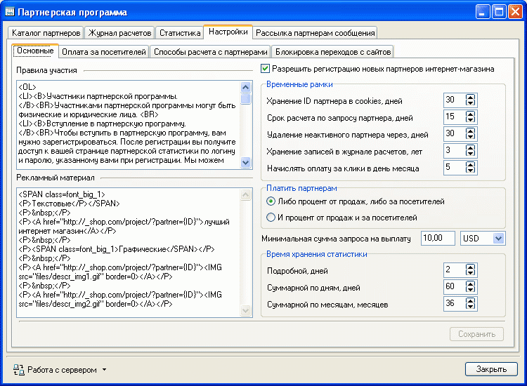
Если параметр "Разрешить регистрацию новых партнеров интернет-магазина" не задан, при попытке зарегистрироваться партнеру будет выдано сообщение:
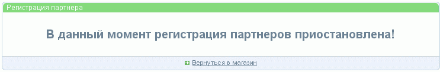
А если регистрация новых партнеров разрешена - будет предложено заполнить следующую форму:
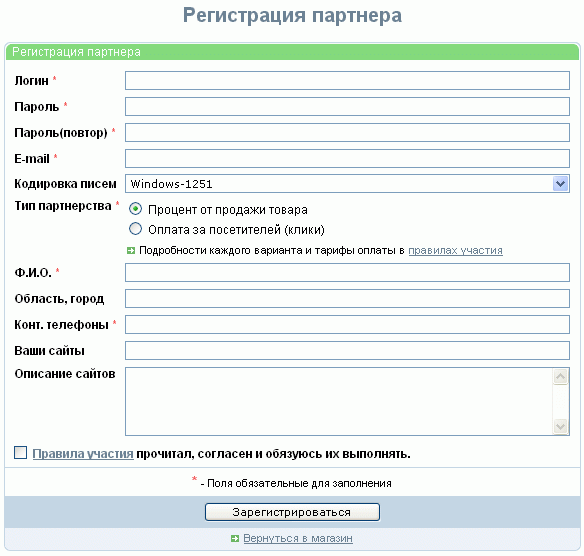
При этом следует иметь в виду, что опция "Тип парнерства" отображается только тогда, когда в настройках параметр "Платить партнерам" указан как "Либо процент от продаж либо за посетителей", причем в случае, если при этом также заданы тарифы и способы расчета (закладка "Тарифы и способы оплаты").
Параметр временных рамок "Хранение ID партнера в cookies, дней" означает следующее:
Cookies - это небольшая порция текстовой информации, содержащей в данном случае ID партнера. Сервер, на котором располагается сайт партнера, передает эту информацию интернет-обозревателю потенциального покупателя и на некоторый период времени эта информация записывается у него в файл. Обычно этот файл называется "cookies.txt" и лежит в рабочей директории установленного на компьютере пользователя интернет обозревателя.
Интернет-обозреватель покупателя может хранить эту информацию и передавать ее серверу с каждым запросом как часть HTTP заголовка.
Если покупатель, перешедший по ссылке с сайта партнера, не сразу сделает заказ, а вновь зайдет в магазин через некоторое время, благодаря cookies система сможет определить ID партнера, направившего этого покупателя в магазин.
Параметр "Хранение ID партнера в cookies, дней" определяет, в течении какого времени интернет-обозреватель покупателя будет "помнить" ID партнера, который "привел" покупателя в магазин.
Естественно, если хранение cookies в браузере покупателя отключено, или он удалил их принудительно, данные об ID партнера не сохранятся.
Однако в случае, если покупатель, даже с отключенными cookies, перешел по партнерской ссылке и сразу сделал заказ, партнер будет идентифицирован системой и причитающееся ему вознаграждение будет начислено.
В окне "Правила участия" указываются правила, с которыми партнер может ознакомиться. Типовые правила можно посмотреть здесь. При этом партнеру будут показаны не только сами правила участия в партнерской программе, но и условия оплаты за посетителей и возможные способы выплаты вознаграждения, если таковые заданы.
2. "Оплата за посетителей". Указываются тарифы (размер и валюта оплаты за 1000 посетителей при задаваемом числе посетителей на одного покупателя):
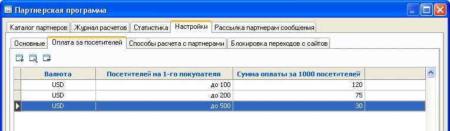
Особенности оплаты за посетителей ("клики") - см."Партнерский расчет".
3. "Способы расчета с партнерами". Здесь указываются способы расчета (наименование способа, его краткое описание и курс к базовой валюте), выбрав которое партнер сможет получить свое вознаграждение.
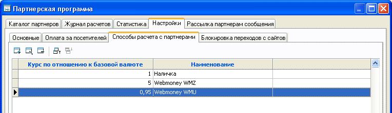
4. "Блокировка переходов с сайтов". В этом разделе задаются имена сайтов, партнерские переходы с которых не будут учитываться.
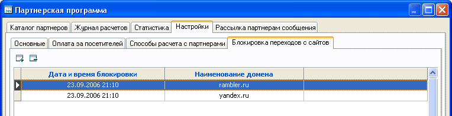
Это может быть удобно, т.к. некоторые поисковые системы индексируют содержимое сайтов вместе с партнерскими идентификаторами, в то время как позиция вашего сайта в результатах выдачи поиска зависит на 90% от вашей работы по продвижению сайта.
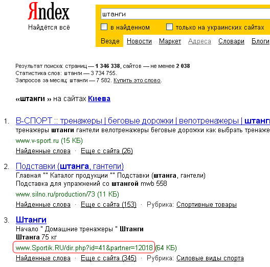
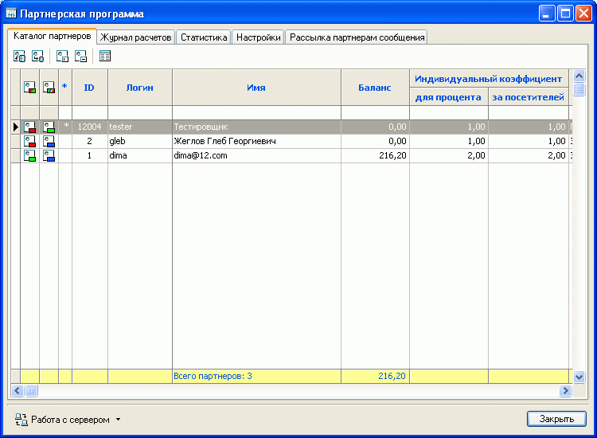
Позволяет просматривать и редактировать каталог партнеров. Следует учесть, что сведения о партнерах, как и сведения о покупателях, хранятся на сервере, поэтому для работы необходима связь с сервером. Для запроса сведений о партнерах следует воспользоваться кнопкой запроса:
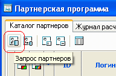
После запроса сведений, выбирается партнер или же сразу несколько и нажатием кнопки вызова редактора
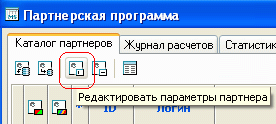
можно задать или отредактировать параметры партнера (или сразу нескольких), в том числе коэффициенты для выплат (с продаж и/или за посетителей), указать состояние счета (заблокирован или рабочий), тип партнерства (процент от продажи или оплата за посетителей), установить характеристику партнера (новичок, проверенный, подозрительный, нарушитель) и проверить, а при необходимости и откорректировать дату последней авторизации партнера:
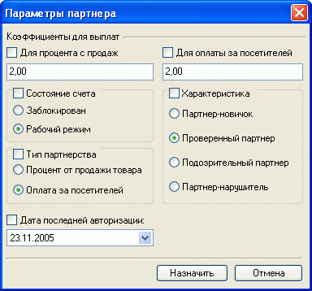
Следует иметь ввиду, что конечная сумма, подлежащая выплате партнеру, зависит от назначенной товару скидки. Алгоритм расчета конечной суммы, выплачиваемой партнеру: см."Партнерский расчет".
Можно удалить одного или группу выделенных партнеров вообще:
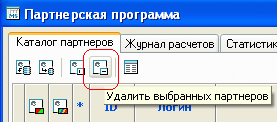
Для выполнения групповой операции необходимо выделить группу партнеров (Ctrl+левая кнопка мыши), и произвести операцию над группой.
После внесения изменений необходимо нажатием соответствующей кнопки передать осуществленные изменения на сервер:
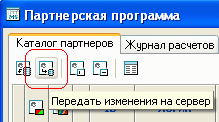
Об успешном выполнении передачи данных на сервер свидетельствует появление соответствующего сообщения.
Помимо изложенного, нажатием кнопки «Показать/скрыть дополнительную информацию о партнере»
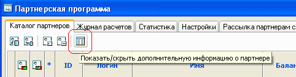
можно вызвать/спрятать окно дополнительной информации, в котором можно просмотреть сведения о партнере, указанные им при регистрации:
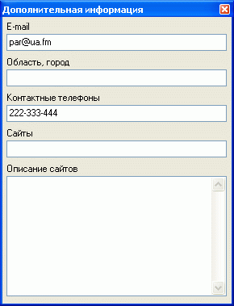
Также при просмотре и анализе каталога партнеров возможна фильтрация записей по различным критериям, для чего в соответствующей колонке в белое поле под шапкой таблицы необходимо ввести условие фильтра в виде одного из знаков "<" (меньше), ">" (больше), "<>" (не равно) или "=" (равно) и требуемое значение (примечание знак "=" можно не вводить, а сразу вводить значение фильтра):
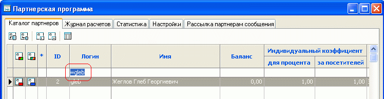
Возможно задание условий фильтра по нескольким критериям.
Для снятия условия фильтрации необходимо выделить условие фильтра (дважды кликнув на соответствующей ячейке левой кнопкой мыши), затем нажать на клавиатуре клавиши "Delete" и "Enter".
Программа Melbis Shop позволяет вести журнал расчетов, в котором отслеживать запросы партнеров на списание (для их получения или обновления необходима связь с сервером, возможно получение только новых или всех записей журнала), а также проводить операции зачисления, списания или штрафования с указанием суммы, а при необходимости и описания операции. При этом автоматически вычисляется и отображается баланс по счету на начало и конец операции:
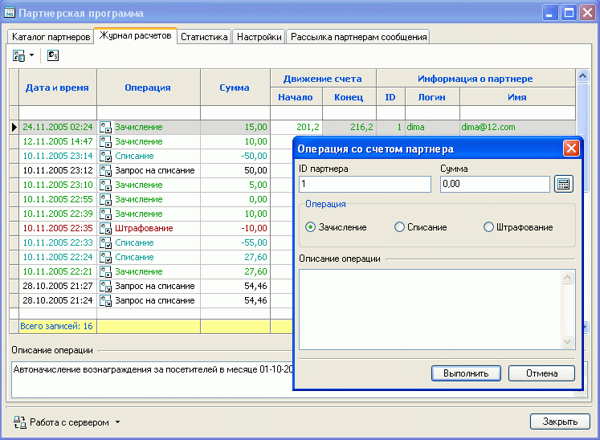
При просмотре и анализе журнала расчетов возможна фильтрация записей по различным критериям, для чего в белой незаполненной строке под шапкой таблицы в соответствующую колонку необходимо ввести условие фильтра.
Следует принять во внимание, что для первых двух колонок задание фильтра имеет некоторые особенности. Так для колонки "Дата и время" условия не могут быть указаны как "равно", а только как "до" или "после", например, ">23.11.2005" что связано с присутствием в этой колонке еще и времени. Для колонки "Операция" условия задаются по коду операции: 0 - зачисление, 1 - списание, 2 - штрафование, 3 - запрос на списание. После ввода условия следует нажать на клавиатуре клавишу "Enter". Например, для просмотра только запросов на списание необходимо в колонке "Операция" ввести "=3" или просто "3" и нажать на клавиатуре клавишу "Enter":
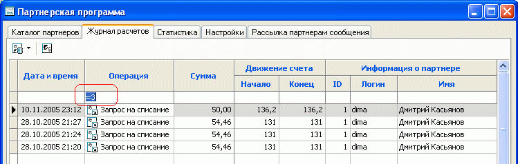
Возможно задание условий фильтра по нескольким критериям.
Для снятия условия фильтрации необходимо выделить фильтр (дважды кликнув на соответствующей ячейке левой кнопкой мыши), затем нажать на клавиатуре клавиши "Delete" и "Enter".
Позволяет предоставлять для анализа в графическо-табличном виде разнообразную статистическую информацию по партнерам, и результатам сотрудничества с ними:
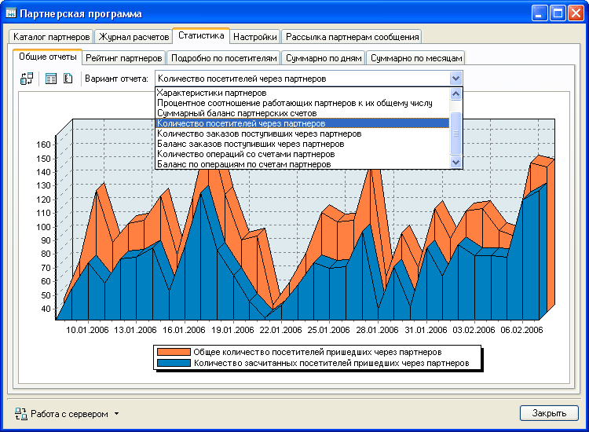
Имеется также возможность массовой рассылки сообщения всем партнерам, для чего на соответствующей закладке необходимо задать тему и текст сообщения и нажать кнопку "Разослать":
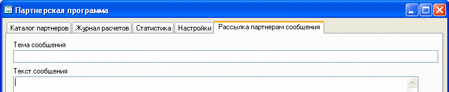